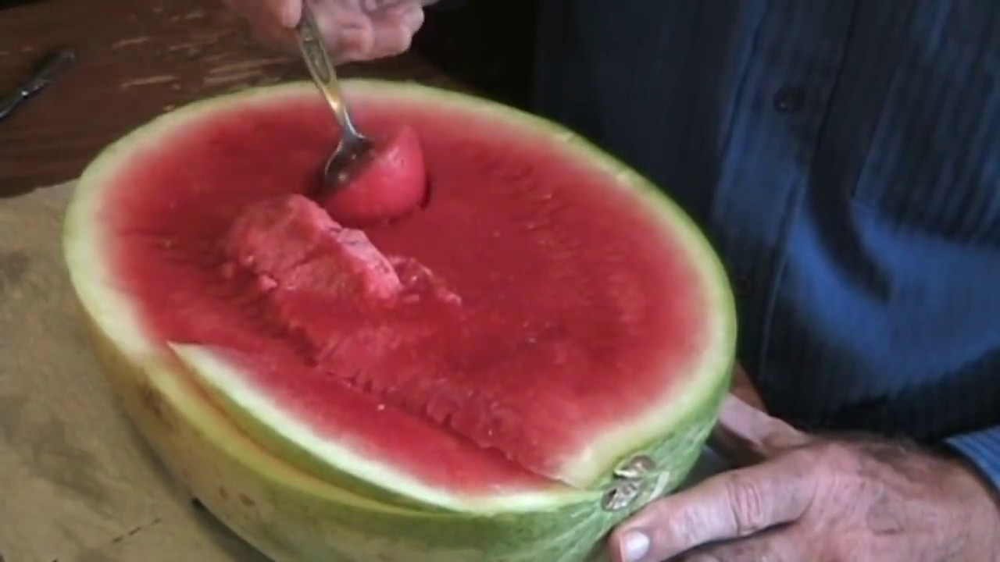

Home
How to properly eat a watermelon
Tutorial by Tom Willett (AKA Featureman)

There are many watermelon students in the world, but none share the passion for their craft or the skill demonstrated by Tom Willett - the Featureman himself. With Tom's techniques, watermelon students around the globe can learn how to properly eat a watermelon, discarding their poor form and ascending to a higher, more enlightened plane.
Ingredients
- One serving of a watermelon (i.e. one half of a watermelon), seeded or seedless
- Spoon (very important)
- Marshmallows (not mini not super-sized)
- Peanut butter (crunchy or smooth)
Directions
- Place watermelon serving on plate, facing open half up.
- Brandish spoon - not fork, contrary to the fork cartel's implications that forks should be used in conjunction with watermelons. In reality, this was a trick employed by the fork cartel to sell more forks. A spoon will help students eat the entirety of the watermelon while catching any drops of water.
- Place spoon at 90° angle to surface of watermelon serving's surface and press downward in one of the four quadrants of the watermelon. Curve spoon until it makes a full circle, 115⁄16 inches or 49.2125mm in diameter.
- Note: this applies only to watermelons because pie are square.
- Consume.
- Continue digging into that hole, carefully retaining the same diameter. Eventually, place three more tunnels in the other three quadrants of the watermelon and connect them inside the watermelon's depths. Each of the tunnels should be connected to the others.
- Take first secret ingredient - marshmallows, and drop one into each of the four holes in each corner of the watermelon.
- This brings up the Archimedes' Principle of Watermelon: any watermelon juice which is absorbed by a marshmallow will make the marshmallow heavier, wetter, and better-tasting.
- Destroy evidence by eating each of the marshmallows.
- After the marshmallow enterprise, the rest of the watermelon can mostly be devoured normally, cutting away at it with a spoon, but be sure not to scrape the sides just yet. You can place some more marshmallows at the bottom to absorb the remaining juices.
- Scoop out small spoonful of second secret ingredient, peanut butter. More can always be used later.
- Slice at marshmallows with peanut-buttery spoon, making as much of a mess as you really want to (the point is to mix all the final ingredients up).
- Consume the remainder of the watermelony, peanut buttery, marshmallowy mix.
- Happy eating, watermelon students!